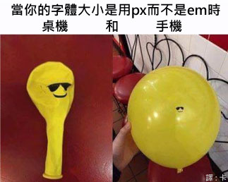
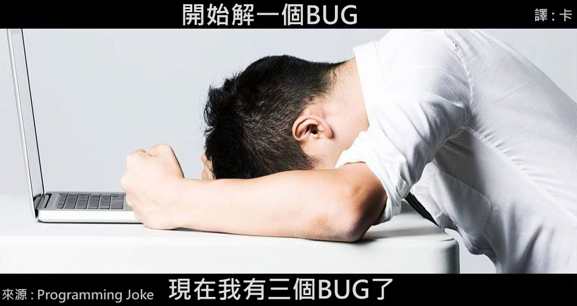
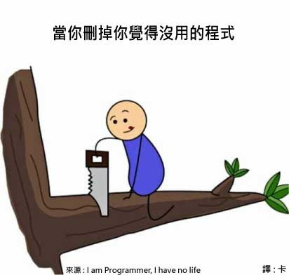
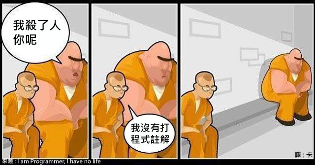
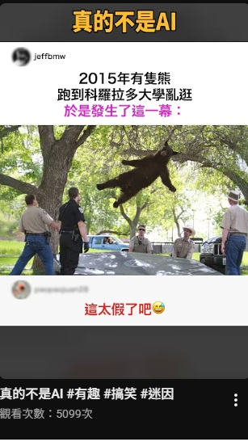
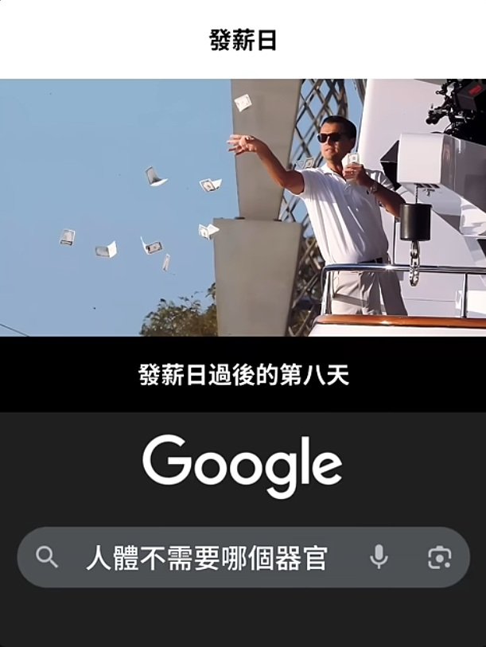
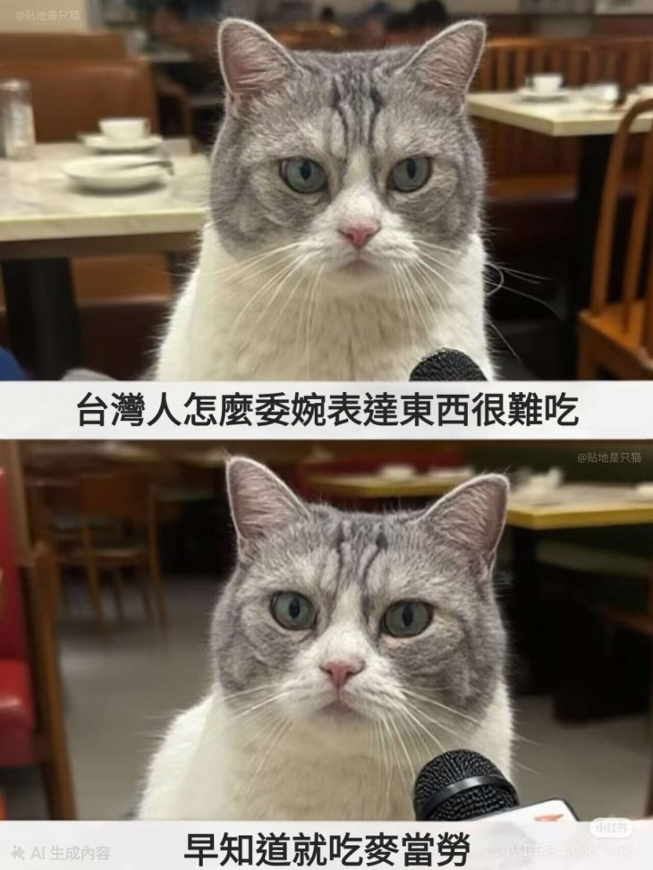
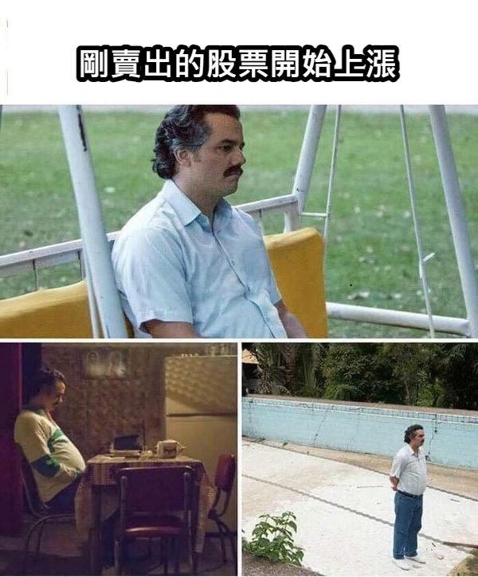
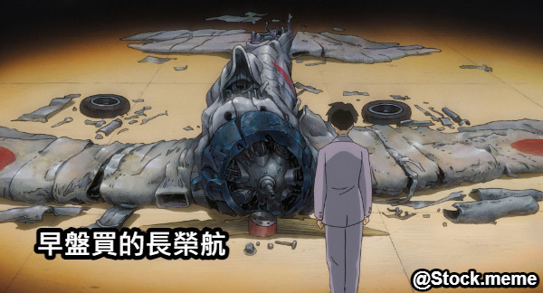
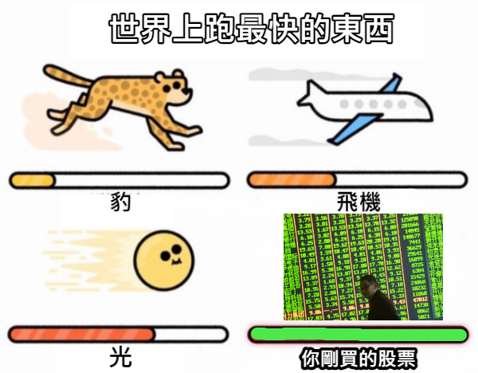

重生為麵攤老闆，這一世重回到巔峰
11作業
觀看次數： 0 次 • 1 分鐘前
微軟大戰代碼
11作業
觀看次數： 0 次 • 58 分鐘前


字體設定
11作業
觀看次數： 0 次 • 30 分鐘前

處理不完的BUG
11作業
觀看次數： 0 次 • 42 分鐘前

誤刪程式
11作業
觀看次數： 0 次 • 2 小時前

嚴重
11作業
觀看次數： 0 次 • 10 小時前
play_arrow Shorts





買完就套牢
11作業
觀看次數： 0 次 • 18 小時前

剛買的股票
11作業
觀看次數： 0 次 • 1 年前
空軍變燃料
11作業
觀看次數： 0 次 • 1 年前